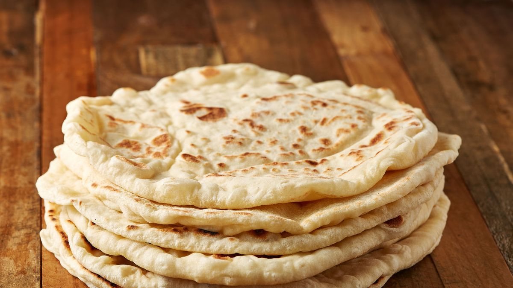

Pita
^
Description
Pita bread is a round, pocketed flatbread that is widely consumed in various cuisines around the world, particularly in Middle Eastern and Mediterranean cuisine. It is characterized by its soft, chewy texture and its unique pocket, which forms naturally when the bread is baked.Here's a basic recipe to guide you through the process:
Ingredients:
- 2 1/4 teaspoons (1 packet) of active dry yeast
- 1 teaspoon sugar
- 1 1/4 cups warm water (about 110°F/45°C)
- 3 cups all-purpose flour (plus extra for dusting)
- 1 teaspoon salt
- 1 tablespoon olive oil (plus extra for greasing)
Instructions:
- Activate the Yeast:
-
In a small bowl, combine the warm water, sugar, and yeast. Stir gently to dissolve the yeast and let it sit for about 5-10 minutes until it becomes frothy.
- Prepare the Dough:
-
In a large mixing bowl, combine the flour and salt. Make a well in the center and pour in the yeast mixture and olive oil. Stir with a wooden spoon until a shaggy dough forms.
- Knead the Dough:
-
Turn the dough out onto a lightly floured surface and knead it for about 5-7 minutes until it becomes smooth and elastic. If the dough is too sticky, add a little more flour, but avoid adding too much as it can make the pitas dense.
- First Rise:
-
Lightly grease a clean bowl with olive oil and place the dough inside. Cover it with a clean kitchen towel or plastic wrap and let it rise in a warm, draft-free place for about 1-2 hours, or until it doubles in size.
- Preheat the Oven:
-
While the dough is rising, preheat your oven to 500°F (260°C). If you have a pizza stone or baking sheet, place it in the oven to preheat as well.
- Divide and shape the dough:
-
Once the dough has doubled in size, punch it down to release the air. Divide the dough into 8 equal-sized pieces and shape each piece into a ball. Cover them with a kitchen towel and let them rest for about 10 minutes.
- Roll out the Pitas:
-
On a lightly floured surface, roll out each dough ball into a circle about 1/4 inch thick. Try to keep the thickness as uniform as possible for even cooking.
- Bake the Pitas:
-
Carefully transfer the rolled-out pitas onto the preheated baking surface. You can bake them directly on the oven rack or on a baking sheet. Bake for 5-7 minutes, or until they puff up and are lightly browned on the edges.
- Cool and Serve:
-
Once baked, remove the pitas from the oven and let them cool on a wire rack. They can be served warm or at room temperature. Enjoy your homemade pita bread with your favorite fillings or dips!
Making pita bread from scratch can be a rewarding experience, and the taste and texture of freshly baked pitas are hard to beat!